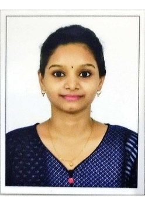

Detail-oriented and technnically adept professional transitioning into Web Development,bringing over two years of experience in the banking and financial services sector. known for problem-solving data analysis, and process optimization with a strong foundation in software Fundamentals.
Bachelor of science, Computer Science
Anna Adarsh College for women - 2016-2019
MBA,Financial Services Management
Anna University CDE,Chennai - 2020-2022
Appication used: IBIS,Citrix,Microsoft Office